Процент это один из интересных и часто применяемых на практике инструментов. Проценты частично или полностью применяются в любой науке, на любой работе и даже в повседневном общении. Человек, хорошо разбирающийся в процентах, создаёт впечатление умного и образованного. В данном уроке мы узнаем, что такое процент и какие действия можно с ним выполнять.
Содержание урока- Что такое процент?
- Как найти процент?
- Второй способ нахождения процента
- Нахождения числа по его проценту
- Задания для самостоятельного решения
Что такое процент?
В повседневной жизни дроби
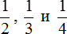
встречаются наиболее часто. Они даже получили свои названия: половина, треть и четверть соответственно.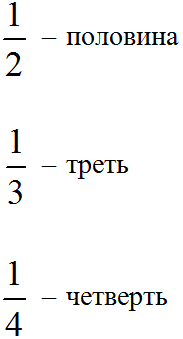
Но есть ещё одна дробь, которая тоже встречается часто. Это дробь \(\frac{1}{100}\) (одна сотая). Данная дробь получила название процент.
Дробь \(\frac{1}{100}\) означает, что нечто разделено на сто частей и от этих ста частей взята одна часть. Значит процентом является одна сотая часть.
Процентом является одна сотая часть
Например, \(\frac{1}{100}\) от одного метра составляет 1 см. Один метр разделили на сто частей, и взяли одну часть (вспоминаем, что 1 метр это 100 см). А одна часть из этих ста частей составляет 1 см. Значит один процент от одного метра составляет 1 см.
\(\frac{2}{100}\) от одного метра уже составляет 2 сантиметра. В этот раз один метр разделили на сто частей и взяли оттуда не одну, а две части. А две части из ста составляют два сантиметра. Значит два процента от одного метра составляет 2 сантиметра.
Еще пример, \(\frac{1}{100}\) от одного рубля составляет одну копейку. Рубль разделили на сто частей, и взяли оттуда одну часть. А одна часть из этих ста частей составляет одну копейку. Значит один процент от одного рубля составляет одну копейку.
Проценты встречались настолько часто, что люди заменили дробь \(\frac{1}{100}\) на специальный значок, который выглядит следующим образом:
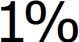
Эта запись читается как «один процент». Она заменяет собой дробь \(\frac{1}{100}\). Также она заменяет собой десятичную дробь 0,01 потому что если перевести обычную дробь \(\frac{1}{100}\) в десятичную дробь, то мы получим 0,01. Стало быть между этими тремя выражениями можно поставить знак равенства:
1% = \(\frac{1}{100}\) = 0,01
Два процента в дробном виде будут записаны как \(\frac{2}{100}\), в виде десятичной дроби как 0,02 а с помощью специального значка два процента записывается как 2%.
2% = \(\frac{2}{100}\) = 0,02
Как найти процент?
Принцип нахождения процента такой же, как и обычное нахождение дроби от числа. Чтобы найти процент от чего-либо, нужно это чего-либо разделить на 100 частей и полученное число умножить на нужный процент.
Например, найти 2% от 10 см.
Что означает запись 2% ? Запись 2% заменяет собой запись \(\frac{2}{100}\). Если перевести это задание на более понятый язык, то оно будет выглядеть следующим образом:
Найти \(\frac{2}{100}\) от 10 см
А как решать подобные задания мы уже знаем. Это обычное нахождение дроби от числа. Чтобы найти дробь от числа, нужно это число разделить на знаменатель дроби, и полученный результат умножить на числитель дроби.
Итак, делим число 10 на знаменатель дроби \(\frac{2}{100}\)
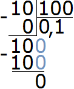
Получили 0,1. Теперь 0,1 умножаем на числитель дроби \(\frac{2}{100}\)
\[0,1 \times 2 = 0,2\]
Получили ответ 0,2. Значит 2% от 10 см составляет 0,2 см. А если перевести 0,2 сантиметра в миллиметры, то получим 2 миллиметра:
0,2 см = 2 мм
Значит 2% от 10 см составляют 2 мм.
Пример 2. Найти 50% от 300 рублей.
Чтобы найти 50% от 300 рублей, нужно эти 300 рублей разделить на 100, и полученный результат умножить на 50.
Итак, делим 300 рублей на 100
\[300 : 100 = 3\]
Теперь полученный результат умножаем на 50
3 × 50 = 150 руб.
Значит 50% от 300 рублей составляет 150 рублей.
Если на первых порах сложно привыкнуть к записи со значком %, можно заменять эту запись на обычную дробную запись.
Например, те же 50% можно заменить на запись  . Тогда задание будет выглядеть так: Найти
. Тогда задание будет выглядеть так: Найти
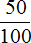
от 300 рублей, а решать такие задачи для нас пока проще\[300 : 100 = 3\]
\[3 \times 50 = 150\]
В принципе, ничего сложного здесь нет. Если возникают сложности, советуем остановиться и заново изучить дроби и как их можно применять.
Пример 3. Швейная фабрика выпустила 1200 костюмов. Из них 32% составляют костюмы нового фасона. Сколько костюмов нового фасона выпустила фабрика?
Здесь нужно найти 32% от 1200. Найденное число будет ответом к задаче. Воспользуемся правилом нахождения процента. Разделим 1200 на 100 и полученный результат умножим на искомый процент, т.е. на 32
\[1200 : 100 = 12\]
\[12 \times 32 = 384\]
Ответ: 384 костюмов нового фасона выпустила фабрика.
Второй способ нахождения процента
Второй способ нахождения процента намного проще и удобнее. Он заключается в том, что число от которого ищется процент сразу умножит на нужный процент, выраженный в виде десятичной дроби.
Например, решим предыдущую задачу этим способом. Найти 50% от 300 рублей.
Запись 50% заменяет собой запись , а если перевести эти в десятичную дробь, то мы получим 0,5
Теперь для нахождения 50% от 300, достаточно будет умножить число 300 на десятичную дробь 0,5
\[300 \times 0,5 = 150\]
Кстати, по этому же принципу работает механизм нахождения процента на калькуляторах. Чтобы найти процент с помощью калькулятора, нужно ввести в калькулятор число от которого ищется процент, затем нажать клавишу умножения и ввести искомый процент. Затем нажать клавишу процента %
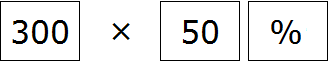
Нахождения числа по его проценту
Зная процент от числа, можно узнать всё число. Например, предприятие выплатило нам 60000 рублей за работу, и это составляет 2% от общей прибыли, полученной предприятием. Зная свою долю, и сколько процентов она составляет, мы можем узнать общую прибыль.
Сначала нужно узнать сколько рублей составляет один процент. Как это сделать? Попробуйте догадаться внимательно изучив следующий рисунок:
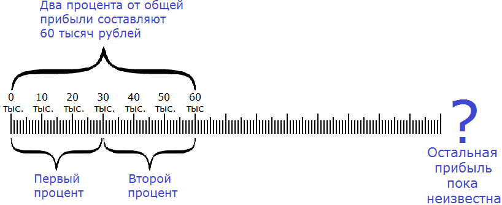
Если два процента от общей прибыли составляют 60 тысяч рублей, то нетрудно догадаться, что один процент составляет 30 тысяч рублей. А чтобы получить эти 30 тысяч рублей, нужно 60 тысяч разделить на 2
\[60 000 : 2 = 30 000\]
Мы нашли один процент от общей прибыли, т.е.
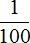
. Если одна часть это 30 тысяч, то для определения ста частей, нужно 30 тысяч умножить на 100\[30 000 \times 100 = 3 000 000\]
Мы нашли общую прибыль. Она составляет три миллиона.
Попробуем сформировать правило нахождения числа по его проценту.
Чтобы найти число по его проценту, нужно известное число разделить на данный процент, и полученный результат умножить на 100.
Пример 2. Число 35 это 7% от какого-то неизвестного числа. Найти это неизвестное число.
Читаем первую часть правила:
Чтобы найти число по его проценту, нужно известное число разделить на данный процент
У нас известное число это 35, а данный процент это 7. Разделим 35 на 7
\[35 : 7 = 5\]
Читаем вторую часть правила:
и полученный результат умножить на 100
У нас полученный результат это число 5. Умножим 5 на 100
\[5 \times 100 = 500\]
500 это неизвестное число, которое требовалось найти. Можно сделать проверку. Для этого находим 7% от 500. Если мы всё сделали правильно, то должны получить 35
\[500 : 100 = 5\]
\[5 \times 7 = 35\]
Получили 35. Значит задача была решена правильно.
Принцип нахождения числа по его проценту такой же, как и обычное нахождение целого числа по его дроби. Если проценты на первых порах смущают и сбивают с толку, то запись с процентом можно заменять на дробную запись.
Например, предыдущая задача может быть изложена так: число 35 это
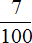
от какого-то неизвестного числа. Найти это неизвестное число. Как решать такие задачи мы уже знаем. Это нахождение числа по дроби. Для нахождения числа по дроби, мы это число делим на числитель дроби и полученный результат умножаем на знаменатель дроби. В нашем примере число 35 нужно разделить на 7 и полученный результат умножить на 100\[35 : 7 = 5\]
\[5 \times 100 = 500\]
В будущем мы будем решать задачи на проценты, часть из которых будут сложными. Чтобы на первых порах не усложнять обучение, достаточно уметь находить процент от числа, и число по проценту.
Задания для самостоятельного решения
Показать решение
2 × 20 = 40
Показать решение
10,5 × 34 = 357
Показать решение
0,8 × 25 = 20
Показать решение
0,015 × 185 = 2,775
Показать решение
11,50 × 150 = 1725
Показать решение
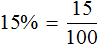
Показать решение
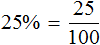
Показать решение
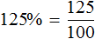
Показать решение
0,2 × 100 = 20
Показать решение
2 × 100 = 200
Понравился урок?
Вступай в нашу новую группу Вконтакте и начни получать уведомления о новых уроках